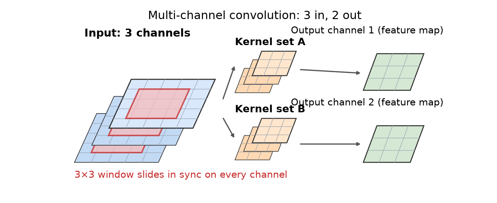

开场 · 从全连接到卷积
全连接的尽头：为图像而生的卷积
全连接把每个像素当独立输入，参数太多。
图像规律：邻近像素相关，模式平移还是它。
卷积层把这两条规律提前设计进结构。
这就是“归纳偏置”的意思。
依据：原书第 291 页
两条归纳偏置
局部性：每个输出只看一小块
权值共享：同一套权重扫全图
训练时只学这一小套权重
正课第三十八集
01 / 9
特征图与多通道
特征图：同一套权重扫全图
每层组织成一张张特征图，即平行的通道。
加权和只在小的局部窗口里做。
所有像素共用同一套权重，平移不变。
多通道卷积：输入通道线性组合，每个输出一套核。
依据：原书第 291–292 页

多通道卷积示意：三张输入通道、两套卷积核、两张输出特征图｜程序生成，未用教材或论文原图
正课第三十八集
02 / 9
参数账与计算量
参数与乘加：一笔能复算的账
每个输出通道配一套窗口×输入通道的核。
参数总量＝窗口格数×输入通道×输出通道。
原书例子：9×6×4，共 216 个可学权重。
乘加次数＝宽×高×9×6×4。
依据：原书第 292 页；本集实验
本集实验复算
9×6×4＝216，对上了
10×10 输入卷到 8×8
乘加 13824 次，与公式一致
正课第三十八集
03 / 9
局部特征
卷积层在学局部特征
卷积层的主要任务是构造局部特征。
再把这些特征用不同方式组合。
第一层学出的常是边缘检测器这类东西。
滤波器的系数不再手写，而是训练出来。
依据：原书第 292 页
逐层组合
底层：边缘和色块
中层：纹理和部件
高层：整块物体的部件
正课第三十八集
04 / 9
式 5.76 与互相关
把加权和写成式子
输出值＝输入通道、窗口偏移各自乘权重再求和。
最后加上这个输出通道自己的偏置。
偏移加在坐标上，严格说是互相关。
权重是学出来的，翻转不要紧。
依据：原书第 292–293 页；脚注 37
s(i,j,c₂)=Σ Σ w(k,l,c₁,c₂)·x(i+k,j+l,c₁)+b(c₂)
Σ 读“加起来”；c₁ 是输入通道，c₂ 是输出通道；w 是可学权重
正课第三十八集
05 / 9
1×1 卷积与权值共享
一乘一卷积与权值共享
1×1 卷积不做卷积，只混通道。
每个像素位置上混合各通道，常用来降维。
同一套核权重在这一层所有像素上共享。
反传时，核权重更新量要把所有像素加起来。
依据：原书第 293 页；本集实验
本集实验对照
同一任务全连接 153600 根连线
卷积只要 216 个权重
相差 711.1 倍
正课第三十八集
06 / 9
Padding 与 Stride
补边与步长：尺寸怎么变
早期网络不补边，图像卷一次就缩小一圈。
现代网络可选补零，或复制边缘像素。
步长缺省 1，也可以每隔几行几列算一次。
AlexNet 第一层步长 4；图像金字塔步长 2。
依据：原书第 293–294 页
不补边会缩多少
3×3 窗口，宽和高各缩两格
卷得越深，图越小
补上一圈，尺寸就能保住
正课第三十八集
07 / 9
Dilation 与 Grouping
膨胀与分组：控制算力和参数
膨胀在采样点之间插空隙，跳过一些行列。
用更少运算覆盖更大区域，但可能混叠。
分组把输入输出分成 G 组各自卷。
G=1 是常规卷积；G=C₁ 是逐通道卷积。
依据：原书第 294 页
两个旋钮
膨胀：3×3 隔点采，视野撑到 5
分组：各干各的，省算力
两者都改运算量和参数
正课第三十八集
08 / 9
资源、部分卷积与作业
机制收束：下一站池化
Dumoulin 的卷积动图能直观看到参数效果。
部分卷积：输入乘掩码，再按有效个数归一化。
作业一：5×5 窗口、3 输入、8 输出，算权重。
作业二：权值共享为什么适合平移？说直觉。
依据：原书第 294 页
下一集与框架
下一集：池化，把图缩小还保住信息
5.4.1 从 p.295 开始
PyTorch 的二维卷积叫 Conv2d
正课第三十八集
09 / 9